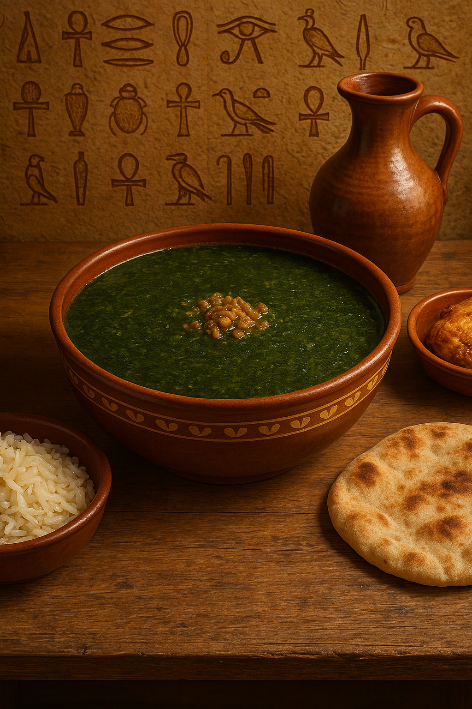

Green Egyptian Soup of Joy
Molokhia is a classic Egyptian green soup made from finely chopped jute leaves, flavored with garlic and coriander. It’s traditionally served with white rice and roasted or boiled chicken.
Ingredients:
- 500g fresh or frozen molokhia (jute leaves)
- 5 cloves of garlic (minced)
- 1 tablespoon ground coriander
- 2 tablespoons butter or ghee
- 4 cups chicken broth
- Salt and pepper to taste
Instructions:
- Heat the chicken broth in a pot until it boils.
- Add the molokhia and stir on medium-low heat. Do not let it boil after adding the molokhia.
- In a separate pan, melt the butter, then sauté the garlic with coriander until golden (this is the “tasha”).
- Add the “tasha” to the molokhia pot and stir well.
- Serve hot with rice and roasted or boiled chicken.